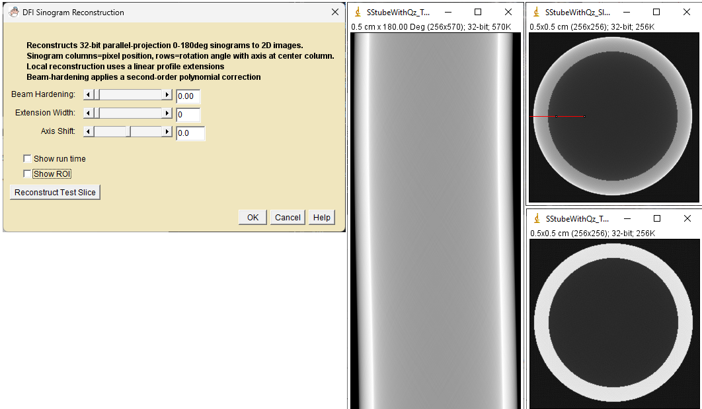
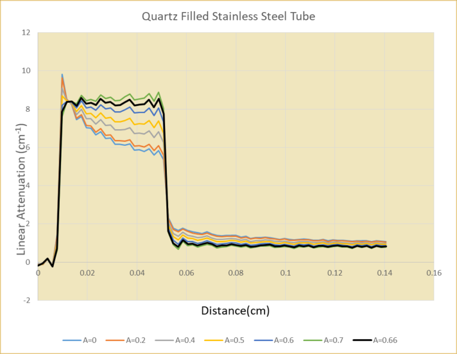
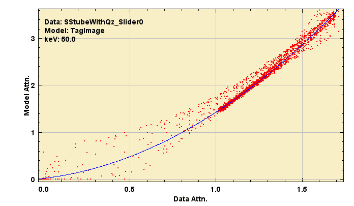
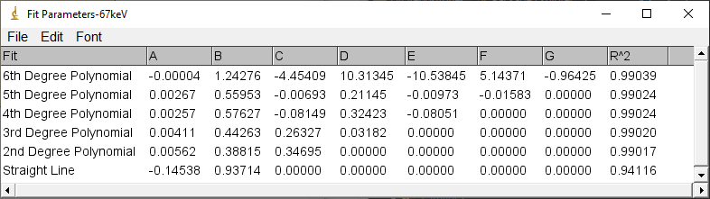

Example-1: Correcting severe beam hardening with the DFI_JTransforms Beam Hardening slider.
This example illustrates that an arbitrary 2nd order correction can fix a cupping artifact but may produce images with inconsistent attenuations.
Pro: Calibration is not required.
Con: Additional steps can be used to improve the result if at least two contrasting components are known.
Stainless steel tube 0.46cm OD x 0.38cm ID plugged with quartz
A tag image was created using ImageJ drawing tools and the Material Tagger plugin
The Scanner Setup plugin was used to select conditions that would produce significant beam hardening.
Source: W target 160KV, 100ma,
Filter: 0.01cm Cu
Detector: 0.01cm CsI.
The sinogram was reconstructed using the DFI_JTransforms plugin.
The DFI_JTransforms beam hardening(BH) slider was used to obtain a flat profile across the tube wall(red
line).

Reconstruction Using Beam Hardening Slider Dialog
settings(left), Sinogram(center), Reconstructions(right): Slider=0(top) and
Slider=0.66(bottom)
The plot below shows profiles along the red line at seven slider values. The best profile was obtained at BH = 0.66.

Profiles along the red line for several slider values
The corrected image looks good but there is a problem. The effective X-ray energies for the tube and quartz are not the same!
In the bottom right image, the linear attenuation of the SS tube is 8.331cm-1 and the quartz is 8.05 cm-1.
Using the X-ray MuLin Lookup, the effective energy for the SS tube is 59.6 keV and the quartz is 51.9 keV. The arbitrary slider correction fixed the cupping artifact but produced tube and quartz linear attenuations that are inconsistent.
Using the X-ray Ratio Lookup plugin, the attenuations are in the correct ratio at 67.3 keV. At this energy Qz = .60cm-1 and SS = 6.216cm-1
The corrected image must be multiplied by 0.746 to correct the error.
Example-2: Linearization using Fitter and Apply Plugins on a Simple Sample
This example illustrates that model-based selection of the linearizing function can correct cupping artifacts at consistent linear attenuations
Pro: Corrects both cupping and attenuation inconsistency.
Cons: Requires a model with segmented, known components. A prior 2nd order cupping correction may be needed to make the image segmentable for tagging.
We repeat Example-1 using model-based correction.
The images look the same as Example-1 and are not shown again here.
The 2nd order corrected image from Example-1 was segmented and tagged using the Material Tagger plugin.
The model and beam hardened image attenuation fits were calculated using the Linearization Fitter plugin.
The fit was applied to the original sinogram using the Apply Linearization plugin.
The animation below illustrates how the fit changes with X-ray energy. The higher attenuations are dominated by the tube and the lower attenuations are a mix of tube and quartz. Both are well centered around the fit line at 67keV.

Linearization Fitter results at three X-ray energies. The best second order fit is obtained at 67keV

Fit parameters at 67keV
For comparison with Example-1, the sinogram was corrected with the 2nd order fit and reconstructed. The linear attenuations and effective energies are shown below. The tube and Qz Eeff energies are more consistent. A higher order correction may produce better results.
Effective energy using Linearization fitter at 67keV